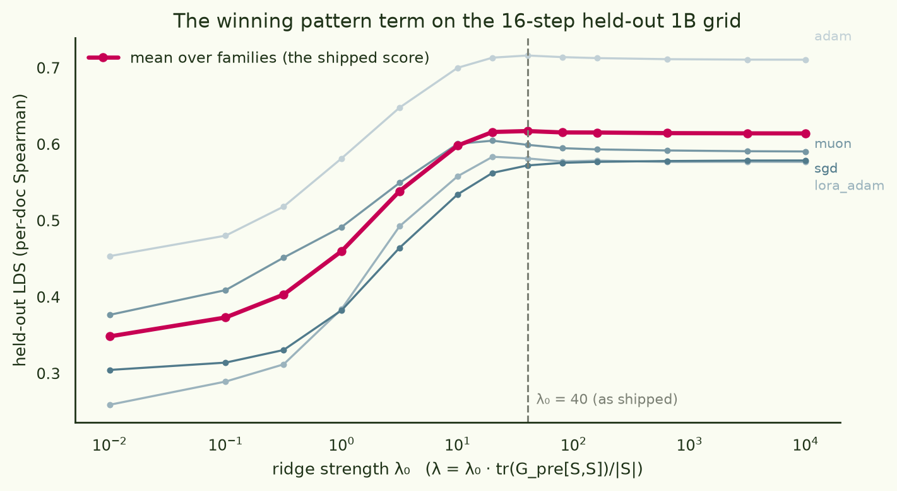
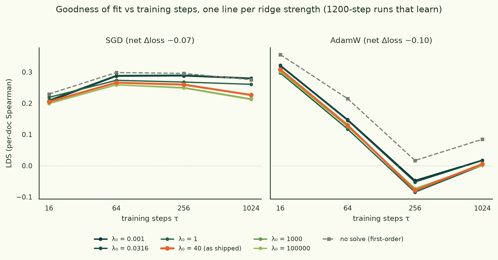
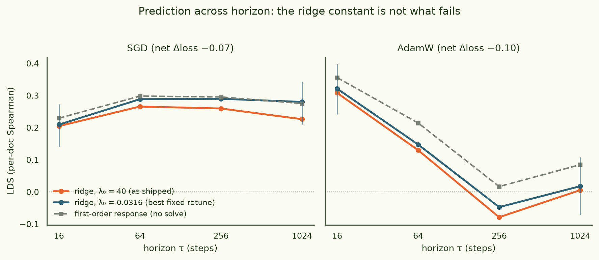

The winning ridge, stress-tested against longer training
The arch2 symbolic-regression run ended with a formula whose core is a ridge solve in the : solve (Gpre[S,S] + λI) x = 1 on the trained subset S, predict Gpre[:,S] x for everything else, with λ = λ0·tr(Gpre[S,S])/|S| and a fleet-tuned λ0 = 40. Follow-up runs at longer horizons showed the formula's falling as training went on. This piece turns the one knob the formula has: sweep λ0 over ten orders of magnitude, at every horizon, and see what was the constant's fault and what wasn't. Everything here uses the winner's pattern term only — the rank-1 interaction term is switched off throughout — and only training runs that actually reduce loss.
§1At the horizon it shipped for, 40 was exactly right
First the anchor. The held-out eval that picked the winner scores predictors on 16-step of gemma-3-1b across four optimizer families. Re-scoring the pattern term through the unmodified pipeline at thirteen values of λ0:

λ0 = 40 is the exact argmax of the held-out score (0.617) — but the optimum is a one-sided plateau, and the solve itself is worth just +0.003 over its own λ→∞ limit.
Everything from λ0 ≈ 20 to 104 scores 0.614–0.617, while small λ falls off a cliff (0.35 at λ0 = 0.01). At sixteen steps the inversion barely matters — as λ→∞ the solution degenerates to a plain column sum of the Gram, and that already gets you 0.614. The fleet's constant sits at the start of the safe plateau: correctly tuned, for a dial that is nearly free at this horizon.
§2One line per λ, across 1200-step runs that learn
The stress test: 1200-step LoRA fine-tunes of gemma-3-1b on random 32-doc subsets — plain SGD and AdamW, learning rates calibrated so the runs genuinely descend (net probe-loss change −0.07 and −0.10 nats respectively), with loss snapshots at τ = 16, 64, 256, 1024 steps. Scoring is the eval's own protocol ( from a held-back half of runs, LDS on the other half; nval = 13 SGD / 16 AdamW). One line per λ0, goodness of fit against number of training steps:

Across eight orders of magnitude of λ the lines form one tight band: for these runs, ridge strength is nearly irrelevant — what changes with horizon is whether the geometry predicts at all.
Two entirely different fates, neither of which the dial controls. SGD stays predictable at every horizon — LDS ≈ 0.21–0.29 from 16 steps to 1024, drifting mildly upward for weaker ridges (best fixed retune λ0 ≈ 0.03: +0.054 at τ = 1024, paired bootstrap CI [−0.015, +0.115], P(Δ>0) = 0.94 — suggestive, not conclusive). AdamW collapses for every λ: 0.31 at 16 steps, ≈ 0 by 256, and the best value over the whole grid at τ ≥ 256 is 0.02.
§3What fails is the solve, not the constant

For AdamW at τ = 1024 the ranking flips outright: the first-order prediction beats the best ridge in the sweep by Δ = 0.067, and the paired bootstrap puts that difference at 95% significance ([+0.003, +0.123] in favour of no-solve, P = 0.019). Once a preconditioned optimizer has run long enough to leave the regime where w0-gradient geometry describes the trajectory, inverting that geometry harder cannot help — the failure is the linearization, not the regularization.
| arm | predictor | τ=16 | τ=64 | τ=256 | τ=1024 |
|---|---|---|---|---|---|
| SGD | ridge @40 (shipped) | +0.205 | +0.266 | +0.260 | +0.226 |
| ridge @0.0316 (retuned) | +0.210 | +0.289 | +0.290 | +0.280 | |
| first-order (no solve) | +0.230 | +0.298 | +0.296 | +0.275 | |
| AdamW | ridge @40 (shipped) | +0.308 | +0.130 | −0.079 | +0.006 |
| ridge @0.001 (≈ best on grid) | +0.322 | +0.148 | −0.047 | +0.018 | |
| first-order (no solve) | +0.356 | +0.215 | +0.017 | +0.085 |
§4A data-hygiene footnote
The first pass of this sweep showed the SGD arm decaying too — 0.25 at 16 steps down to 0.03 at equilibrium — which would have made a tidier story. It was an artifact: the run pool contained four late top-up runs executed with a different config (3× the learning rate, ⅓ the weight-decay tether), three of them landing in the scored half. Filtering each arm to its modal config restored the flat curves above and reconciled the numbers with the committed baseline. Worth remembering whenever runs accumulate across fleet waves: the dedupe that keeps the latest file is not the dedupe that keeps the same experiment.
§5Why you'd expect the dial to want to shrink
Kernel-regression theory says gradient flow trained for time t is equivalent to ridge regression with λ ∝ 1/t (Ali, Kolter & Tibshirani 2019), and the same implicit damping appears inside modern unrolled-attribution methods (SOURCE, Bae et al. 2024: per-segment damping ≈ 1/(η̄K)). A constant tuned at 16 steps should be ~64× too strong by 1024 — and the SGD arm's best-λ does drift down with horizon (0.3 at τ = 16 → 0.03 later), in units where λ0 counts multiples of the subset Gram's mean eigenvalue (EK-FAC's damping convention is 0.1 in the same units; the shipped value is 40). But for these learning runs the drift is worth a few hundredths of LDS at most. The practical summary for the formula: the constant was never the problem; horizon is a regime change, not a recalibration.
Caveats: 13–16 scored runs per arm make single-cell LDS noisy (the bootstrap CIs in Fig. 3 are the honest read); the retuned λ is chosen on the same runs it is scored on, so treat retuned-vs-shipped gaps as upper bounds; and the two arms here carry small parameter noise and a decoupled weight-decay tether so that 1200-step runs stay bounded — the τ-snapshots are quenched loss changes measured against the same pre-run baseline as the 16-step eval.
experiments/training_prediction/equilibrated/
(ridge_lambda_sweep.py, ridge_sweep_bootstrap.py,
heldout_lambda_sweep.py; results in ridge_sweep_20260713_090849/,
commits 651e132…4da37c3).
Data · arcadia-impact/training-prediction-1b-heldout-20260708 (held-out grid, 1200-step runs, and this sweep's outputs under
equilibrated/).
Cut from this page · the same sweep over the thread's thermal/Langevin (SGLD) arms, which heat rather than learn; those results live in the repo's
RESULTS.md alongside the sweep outputs, and the equilibrated-FT
story itself is §12 of the
run page.